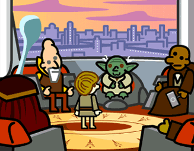

January 2002

Members joined: 2, Visitors: 59.

January 27, 2002
Two more people have joined the ISW bringing the total membership of the club to 30. Welcome to Sean M and Colin.
Like last week, this weeks RTÉ Guide has an article about Star Wars in it's BackChat section This time it's about the two Star Wars fans in Seattle. Click here to view the article. They also have a feature on the up and coming stars of 2002 which includes Hayden Christensen as Anakin Skywalker. Click here to read this article and here to view the picture.

January 14, 2002
This weeks RTÉ Guide (12-18 January) has a small article on everyone's favourite topic.
It seems that squeaky-clean 'Nsync have managed to scam parts in the next Star Wars installment, Attack of the Clones. The boys appear briefly in a battle scene and are thankfully hacked to bits by a light sabre.To see a scan of the article, which appeared in the Guide's BackChat section, click here.
I have the 'Link to Us' section finally up which I think completes all sections of the site converted to Version 3. I know it took a long time but it's finally done.

January 4, 2002
Happy New Year to everyone! Hope you had a good one. A few updates this time. The Trivia results are now up again for you to re-live past glories. They can be found in the Archives scetion. Also December 2001 has been added to the News Archives. Finally the past Poll results are now complete up to the last poll on the site.
I was browsing around the other day and when I went to the DudeStudios.com site I saw that Rich Cando is doing his own 'Select' pictures for his upcoming Flash film 'Star Dudes: Episode I'. What was interesting about this is that our mascot Yoda is in one of them. (Picture taken from dudestudios.com)